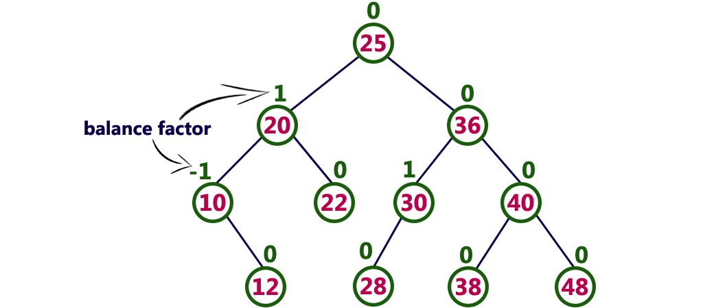

All about AVL Trees!
What is an AVL tree?
An AVL Tree is a self-balancing binary search tree. The self-balancing feature helps ensure the best case run time for search algorithms.
How does it balance itself?
It uses an extra data field called the balance factor. For each node, the balance factor is the height of the node's left subtree minus the height of the node's right subtree.
How does it work?
- First, a node is inserted like any other binary search tree
- Then, the tree checks the balance factor on all nodes on the path from the newly inserted node to the parent
- If any have a balance factor less than -1 or greater than 1, the node will be rotated away from the imbalance
What do they look like?

They sound really cool! I'd love to see one in action!
Check out this animation! It shows insertion, deletion, and searching!